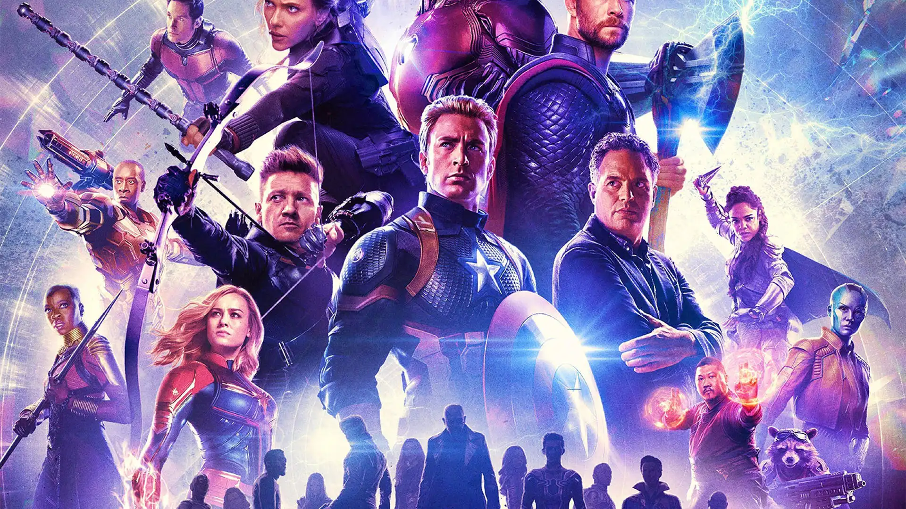

复仇者联盟
-
《复仇者联盟》 《复仇者联盟》由乔斯·韦登编剧并执导， 主要讲诉的是钢铁侠、美国队长、雷神、绿巨人、黑寡妇 、鹰眼等超级英雄集结在一起，组成强大“复仇者”团队 ，共同惩恶扬善，为和平而战的故事。
-
大众评分：
65 -
媒体评分：
65 -
网站评分：
65

《复仇者联盟》由乔斯·韦登编剧并执导， 主要讲诉的是钢铁侠、美国队长、雷神、绿巨人、黑寡妇 、鹰眼等超级英雄集结在一起，组成强大“复仇者”团队 ，共同惩恶扬善，为和平而战的故事。
讲述了在二次世界大战中，具有超人能力的正义英雄美国队长为了解放世界人民与“红骷髅”展开正义与邪恶的战争。
故事背景于《美国队长3：内战》，讲述了黑豹回到了瓦坎达担任国王，然而当过去的敌人再次出现，他被卷入一场正邪大战当中的故事。

史蒂芬·斯特兰奇（Stephen Strange），原本是一名优秀的神经外科医生，因一次车祸导致其双手再也无法使用手术刀正常工作， 为了治好自己的双手史蒂芬寻遍世界各国名医都徒劳无果，绝望的他只能来到喜马拉雅山上拜访传说中的魔法师古一（Ancient One）， 却被古一看中，收其为徒，传授他如何运用精神和咒语施展魔法，在学习魔法的过程中，史蒂芬的双手也逐渐恢复， 出师后的他化身奇异博士守卫世界，在师父古一阵亡后接替其位置，成为至尊魔法师，还加入了复仇者联盟。
影片讲述了托尼·史塔克在一次绑架事件后改进了盔甲的功能，化身钢铁侠，以一个义务警察的身份保护了这个世界和平的故事